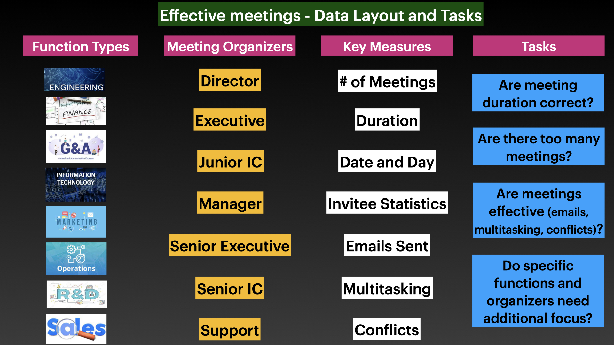

Model Dataset Used for this Analysis
This page provides users with a clear understanding of the model dataset we are using in this analysis. The description of the dataset and tasks we are trying to resolve and want users to solve is listed here. This product is flexible to be able to replace this model data with new meeting dataset when made available. This page can be used as a user guide.

Meeting Effectiveness Data Structure
Image above provides the data structure that has been used to study the effectiveness of meetings. We aggregate meetings data by meeting organizers level in the organization and the function type they belong to in the organization. This aggregation is then used across several key metrics data thatis provided in the dataset. This includes meeting day, number of meetings, meeting duration, conflicts / multi tasking / and emails sent during the meetings, and the invitee behavior to meeting notice. The data has several limitations and we do not have details behind invitees themselves. In addition, details behind multi tasking activity is not provided. So, we have to make some assumptions. The task for the users is to understand if the meetings across the organization is efficient and effective using some of the key factors.